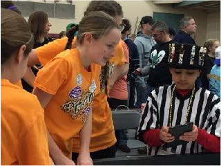
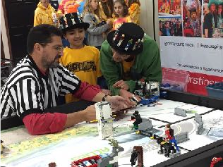

| Page 1 |


Coach’s Corner

Coach’s Role During the Robot Game
By Asha Seshan
After six years of competing in FIRST LEGO League, my family had the opportunity to take
in a state-level tournament from the other side. In particular, we helped to referee the robot
game. There are many observations and lessons that I hope will help other teams.
Not the Droids You Are
Looking For
Let the children speak for themselves.
illustrated through an example.
This is best
Unfortunately, at our

Pennsylvania, USA
event, the exit path went behind tables while games
were still in progress. The volunteer staff did their best
to keep the aisle clear for the matches. Occasionally,
there was a mishap and an exiting team passed right
behind two robot operators. After one particular match,

an upset adult walked into the game area and
complained that his team should get a do-over because
they were bumped from the back. The team was
actually still signing off with their table referee at the
time when the adult jumped in. I said I would talk to the
team. Before the team left, I went over and asked the
kids on the team if they were bumped during the run and if it impacted them or their robot in
any way. All the kids unanimously said, “No”.
Parents and coaches, let the kids decide if something bothered them before stepping in. The
referees always give the kids the benefit of the doubt and will do their best to rectify the
situation. So, coaches, sit back, relax and enjoy the show. Let the kids talk to the referees.
Listen to the children. If the team has issues with one of the mission models and wants to
contest the scoring by the referee, all they have to do is politely ask to talk to the Head
Referee who will rule consistently across all tables at a tournament. Accept the ruling given.
In most cases, the referee can operate the model by hand to check to see if it is working
correctly. There have certainly been cases when the model did not work (even by hand) and
and my team was given the points. However, in majority of cases where the model works by
hand, it just means the team’s solution was not robust enough.
Unfortunately, we witnessed several instances when adults on the team began arguing for
points with the table referee and the head referee. Amusingly, kids on the team had to
console the adult, saying, “Coach, let it go.” You know when the kids are calming the coach
down that the coach is taking the event much too seriously. This reflects poorly on the team. I
hope all team members have the guts to tell their coaches when they are too involved.
Let the children make decisions. FIRST is about the children making the decisions. It is
alarming to see the number of teams that look to their coaches (or walk up to their coaches)
in the middle of the run when things don’t go right. We have even seen coaches yell out
instructions to the team members.
The Droids have never looked at me in six years of competing. They make their own
decisions to run a mission or re-run a mission. In fact, they appear so calm and in sync that
table referees and resetters have made comments to me about how independent they are.
Making their own decision during tense moments is all part of the program. Let the team
decide.
Coach’s Role During the Robot Game. So, what is the coach’s role? Let them know when
and where they need to be. Take photos and video. Be the first to congratulate. Be the
loudest to cheer regardless of how the run went. Be their supporter, but not the decision

maker.